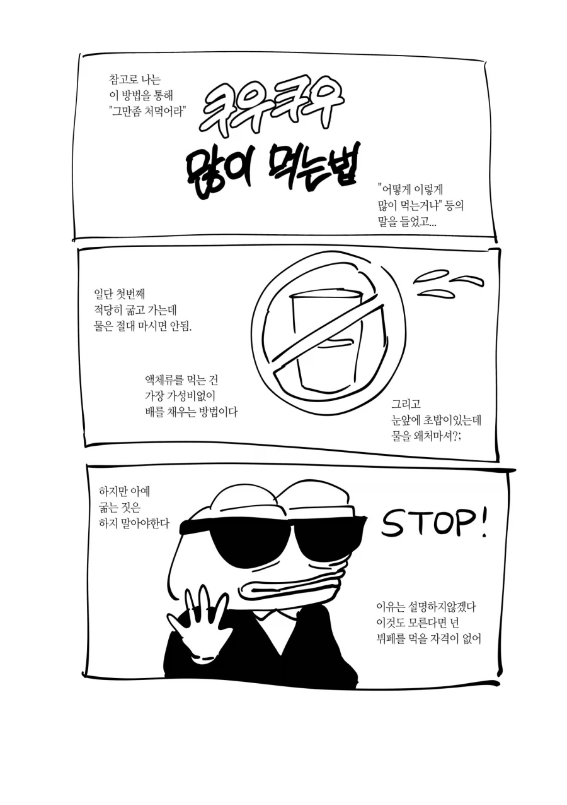
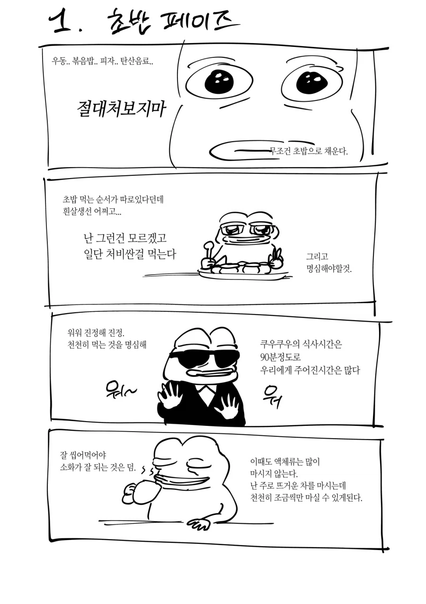
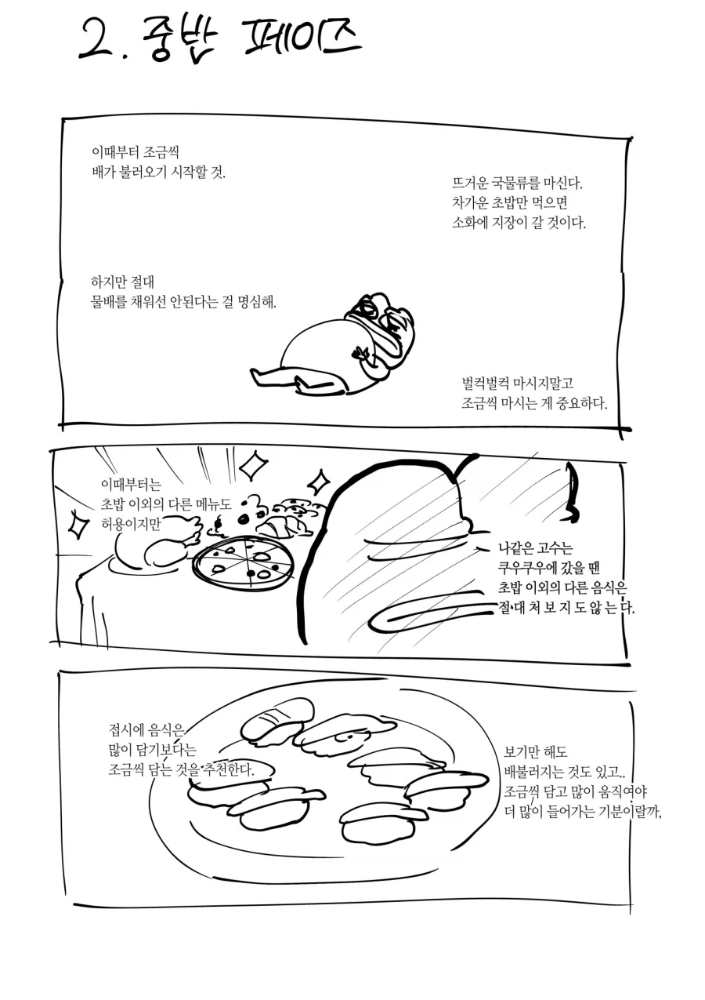
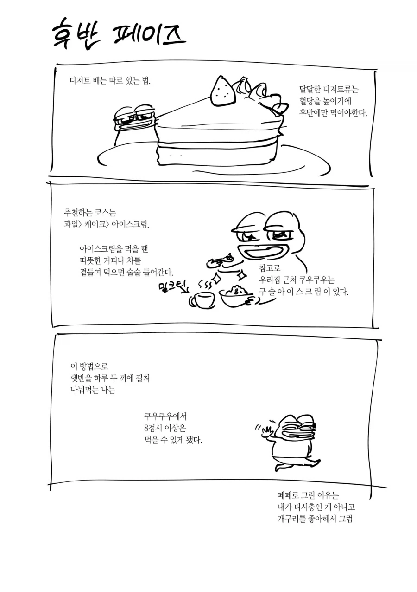

쿠우쿠우 지점별 차이 좀 크고. 미쳤다 정도도 아님. 대신 예전에는 사줘도 안 가에서,
지금은 광어랑 연어초밥만 엄청 조지고 싶다하면 가는정도더라. 그둘은 점바점이 덜하더라
나같우 고수 ㅇㅈㄹ 줘패고싶네ㅋㅋ
저거 맞지
처음에 약한 샐러드랑 같이 초밥류로 두접시 먹고
그다음에 괜찮아보이는 일반음식 먹고
세번째에 밥과 간장게장 양념게장 새우장등 한번 먹어주고
따뜻한 도가니탕으로 한번 속을 달래주고
다시 일반음식이나 초밥으로 먹고 싶은걸로 가져오고
슬 배가 불러오니 과일과 케잌 커피로 마무리.
개인적인 뷔페 먹는 순서
1. 연어나 육회, 샐러드류
2. 육류와 해산물 위주의 담백한 음식
3. 탄수화물과 튀김 위주의 자극적인 음식
4. 본인 재량껏 다시 먹고싶은 음식
5. 디저트와 소화를 돕는 차류
저지랄 하고도 8접시밖에 못먹어?
뽕뽑기: 연어같은거 먹으면댐 즐기기: 맛있는거 골라서 골고루먹다가 후식 딱따 때리면서 대화하고 나오기
1.국그릇에 육회. 간장 와사비 소스 세팅
2.접시에 광어 12피스 + 연어 서너조각 + 펩시라임 1컵
3.접시에 광어 12피스 + 연어 서너조각 + 펩시라임 1컵
4.접시에 광어 12피스 + 연어 서너조각 + 펩시라임 1컵
5.피자 서너조각 + 펩시라임 1컵
6.케이크 서너조각 + 우유 1컵
끝.
쿠우쿠우 생각하면 진짜 예식장 뷔페는 씹거품임
쿠우쿠우(골드아님) 급 예식장 식대가 6만원 그냥 넘어. 걍 결혼비용임
어떤 예식장은 아예 쿠우쿠우로 뷔페 해결하더라
걍 먹고싶은거 먹는게 뷔페 가는 이유잖아요...
흉문 열면 더 들어감ㅇㅇ
그냥 여러가지 되는데까지 먹는거지 뭐 저렇게까지 사력을 다해 먹어야되는거냐?ㅋㅋ
뷔페 가기 전에 굶는거부터 이미 하수임 ㅋㅋ
먹짱을 읽어보면 5시간전에 위를 확대해야 한다고 되어있음
뭐 우리가 대회에 나가는 건 아니지만 전 끼니를 굶을 필요는 없다는거지
많이먹어서뭐함 그냥 양대로먹고 즐기면되지
쿠우쿠우가 별로였다는 사람은 혹시 리뉴얼 전 2023년 이전에 간 것이 아닌지, 평일 점심에 간 것은 아닌지 생각해볼 것
쿠우쿠우 리뉴얼 후 평일 저녁이나 주말 기준으로는 별로일 수가 없음ㅋㅋㅋ 퀄리티가 미쳤는데 그게 별로면 시발 호텔뷔페 말고는 못 먹는 인간임